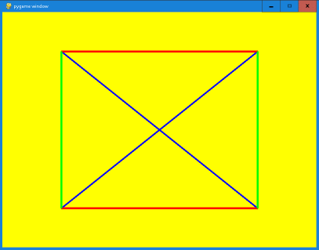

Beginnen wir mit dem Zeichnen von Linien.
import pygame, time
width = 800; height = 600
#Farbnamen definieren - RGB-Farbmodell
white = (255, 255, 255)
red = (255,0,0); green = (0,255,0); blue = (0,0,255)
yellow = (255,255,0)
# Grafikfenster wird geöffnet
screen = pygame.display.set_mode((width, height))
screen.fill(yellow)
pygame.draw.line(screen, blue, (200, 100), (600, 500), 5)
# ... weitere Grafikobjekte
pygame.display.update() # Bildschirm aktualisieren
time.sleep(5) # Wartet 5 Sekunden
pygame.quit() # Grafikfenster wird geschlossen